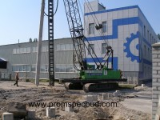
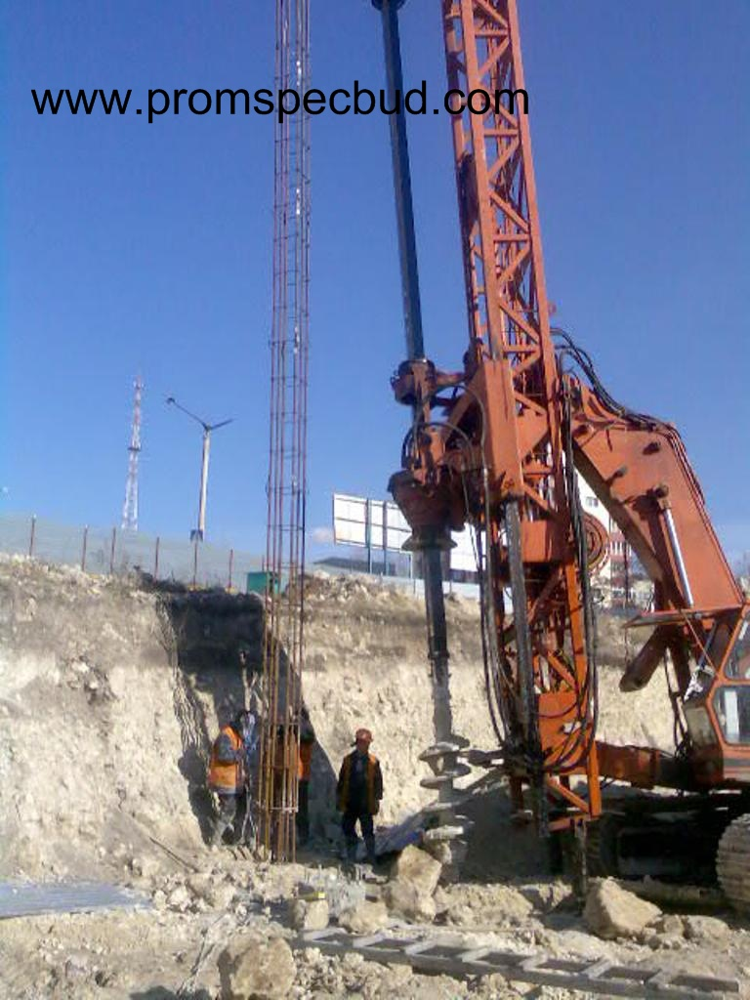
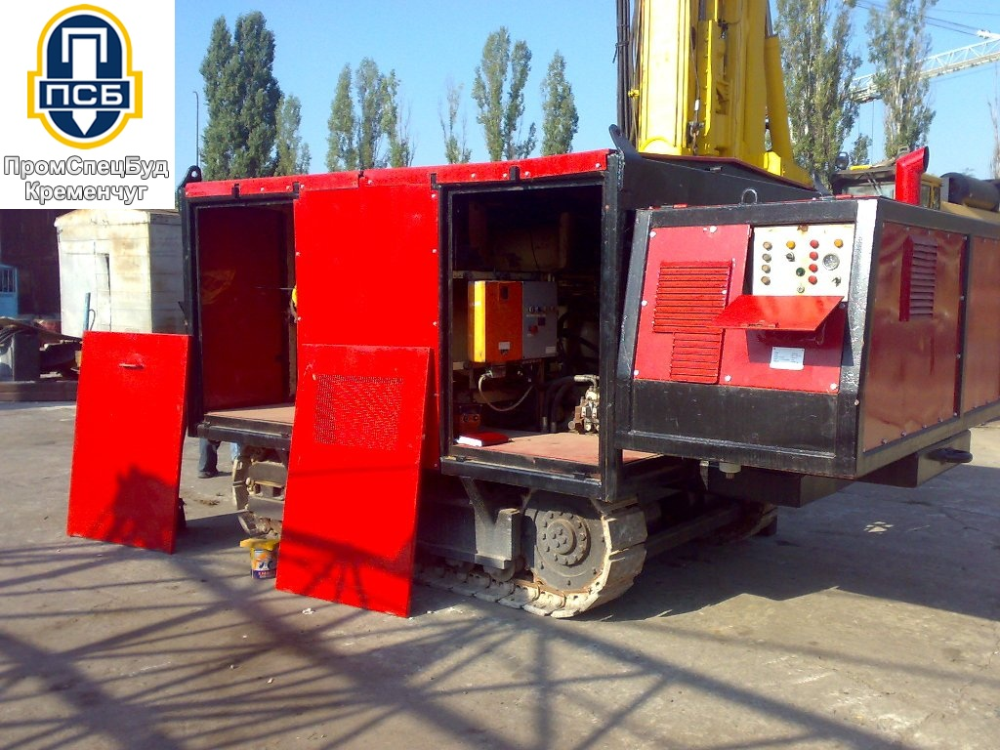

Выполняем полный спектр свайных работ: забивные, буронабивные и буроинъекционные сваи. Собственный парк гидромолотов Junttan и Bruce обеспечивает рекордную производительность — до 5 000 м³ свай в месяц.

Предприятие основано 11 марта 2003 года под бессменным руководством директора Кузика Виктора Фёдоровича. За два десятилетия мы прошли путь от локальной бригады до одного из мощнейших специализированных фундаментостроительных предприятий Украины.
Мы не размываем средства, а постоянно инвестируем в самую современную технику мировых брендов: Bauer RG-20, O&K RH-25, Hitachi, Junttan, Bruce, Schwing. Комплексный инженерный подход главного инженера Пелеханя Вячеслава Вадимовича позволяет оптимизировать проектные решения свайного поля и существенно экономить бюджет заказчика.
Мы выполняем весь спектр работ нулевого цикла и устройства глубоких фундаментов в любых геологических условиях Украины.
 Основная специализация
Основная специализация
Погружение железобетонных призматических свай сечением 300х300, 350х350, 400х400 мм цельными до 15 м и составными до 24 м. Рекордная скорость благодаря гидромолотам Junttan и Bruce.

Высокая несущая способностьУстройство свай большого диаметра методом шнекового или ковшового бурения с обсадными трубами. Идеально для мостовых опор, тяжёлых промышленных сооружений и подпорных стен.
 Технология CFA
Технология CFA
Сооружение свай по технологии CFA (непрерывный полый шнек) в комплекте с мощным бетононасосом Schwing BPL 160-HD. Обеспечивает высокую скорость и отсутствие вибраций рядом с соседними зданиями.
 Сложные грунты
Сложные грунты
Предварительное бурение направляющих скважин установками СП-49 и СП-47 с буровой головкой СО-2. Позволяет погружать забивные сваи через плотные слои песка, суглинка или техногенной насыпи без риска разрушения сваи.
 Контроль качества
Контроль качества
Проведение натурных статических и динамических испытаний свай по ДБН и ДСТУ. Собственные тяжёлые стенды, гидравлические домкраты, измерительные прогибомеры и тензометрические станции с официальными актами и графиками осадки.
 Бесшумно и без вибраций
Бесшумно и без вибраций
Погружение свай методом статического вдавливания усилием до 320 тонн или вдавливание в обсадной трубе с теряемым наконечником (Fundex). Единственный безопасный метод работы непосредственно возле аварийных или исторических зданий.
 Подземное строительство
Подземное строительство
Сооружение несущих и противофильтрационных ограждений глубоких котлованов, подземных паркингов и транспортных развязок. Устройство временных и постоянных грунтовых анкеров для надёжной фиксации шпунтовых стен.
 Под ключ
Под ключ
Комплексная подготовка основания: разработка котлованов, вывоз и планировка грунта, механизированная срубка оголовков свай, армирование и бетонирование массивных монолитных ростверков под колонны и силосы.
Мы гарантируем соблюдение самых жёстких графиков строительства и бескомпромиссное качество каждого погружённого элемента.
Собственный парк гидромолотов Junttan, BSP и BRUCE обеспечивает энергию удара с точной регулировкой. Они в 5 раз производительнее дизельных молотов и не разрушают оголовки свай.
Эксклюзивные прямые контракты с корейским производителем гидравлического оборудования Powerquip. Собственная сервисная и ремонтная база обеспечивает 100% бесперебойность техники.
Имеем полный парк автокранов (16–25 т), тяжёлых бульдозеров, грузовиков, дизельных электростанций и бытовых модулей. Не зависим от сторонних подрядчиков.
При наличии подготовленного подъезда и авансирования мобилизуем технику и начинаем забивку свай в любой области Украины в течение 3-4 календарных дней.
Наши главные инженеры помогают заказчикам найти рациональные проектные решения свайных полей, снизить материалоёмкость и избежать ошибок геологии.
Имеем действующие государственные лицензии, разрешения Госгорпромнадзора на работы повышенной опасности. Выдаём полную исполнительную документацию с актами и журналами погружения.
Современные установки для забивки, вдавливания и бурения свай, гарантирующие бесперебойный темп работ в любое время года.

Базовые машины Hitachi и Junttan, оснащённые современными гидромолотами с весом ударной части от 3 до 7 тонн.
| Энергия удара: | до 85 кДж (регулируемая) |
| Длина сваи: | до 16 м (цельная), до 24 м (составная) |
| Производительность: | до 40-60 свай за рабочую смену |
Немецкий буровой комплекс с вращателем WG-8 в связке с бетононасосом Schwing BPL 160-HD для буроинъекционных свай CFA.
| Технология: | CFA (непрерывный шнек) |
| Диаметр бурения: | 400 – 800 мм |
| Глубина свай: | до 20 метров |

Мощная немецкая машина с буровой головкой BB-10 для устройства буронабивных свай под защитой обсадных труб.
| Крутящий момент: | до 250 кНм |
| Диаметр свай: | до 1200 мм |
| Глубина: | до 28 метров |
Сотни завершённых объектов для флагманов агросектора, металлургии, ритейла и жилищного строительства по всей территории Украины.
Устройство свайных полей для силосов ёмкостью 50-100 тыс. тонн. Десятки тысяч забивных свай сечением 350х350 и 400х400 мм.
Скоростное погружение свайных оснований под каркасы крупных торговых центров со строгим соблюдением графика открытия.
Свайные фундаменты под тяжёлое технологическое оборудование, прокатные станы и цеховые конструкции в условиях действующего производства.
Устройство забивных и буронабивных свай, ограждение шпунтом котлованов для нефтеперерабатывающих установок и резервуаров.
Свайные поля для 9-16 этажных монолитно-каркасных и кирпичных жилых комплексов с детской инфраструктурой.
Составные забивные сваи длиной до 20 метров для тяжёлых силосов зернохранилищ на сложных посадочных грунтах.
Нажмите на фото для полноразмерного просмотра в высоком разрешении.



Пришлите нам данные инженерно-геологических изысканий и проектные нагрузки — наши ведущие инженеры рассчитают оптимальный тип свай, количество и смету в течение 24 часов.
Пелехань Вячеслав Вадимович:+38 (067) 532-97-90
Начальник ПТО Овсянников Валентин:+38 (067) 530-50-58
Принимаем чертежи в форматах DWG, PDF, ZIP
г. Кременчуг, Полтавская область, Украина
Быстрая мобилизация техники по всей Украине
Заполните форму, и наш специалист перезвонит вам в ближайшее время.